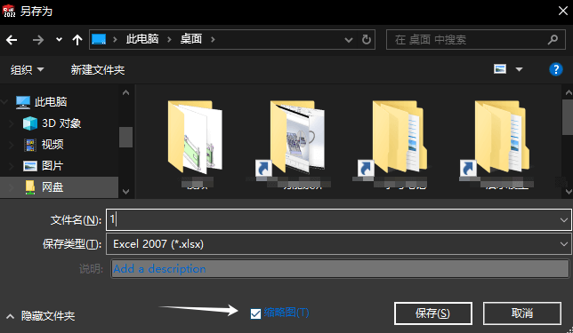
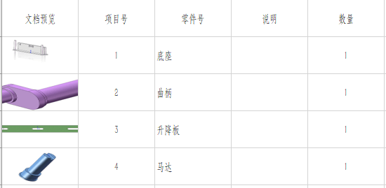

材料明细表
材料明细表说明
添加表格
此方法暂时只介绍材料明细表使用方法。其他表格后面看需要再更新，其实也是可以举一反三的（或是看Help 手册）
插入表格
1、插入材料明细表：【菜单栏-插入-表格-材料明细表】

选择视图
2、材料明细表需要获取零部件信息对象，即需点选所需视图：

模板制作
模型属性定义
BOM表的列属性会是来自于模型的属性，因此在制作BOM表格模板前，你需要先制作好模型自定义属性的模板

插入默认表格
新建一空白装配体文件（或工程图），使用定义好属性模板的零件【插入】到装配体文件内，用该零件里的属性进行BOM表格“列属性”的设置。

首次制作BOM表格模板，可以从原有的SW模板里新建一份材料明细表，然后来进行修改。
修改列属性
选中表格列的列标题（如1：鼠标点击C列），在弹出的工具栏里选中“列属性”（如2）。

在列属性的编辑窗口里，可以设置【列类型】和【属性名称】这里的属性名称就是来自于我们的零件属性的。

表格模板的列数量可以右键【插入】的方式添加，该操作和excel表格操作类似。可以按需自行添加列属性。

保存模板
保存完成模板定制后，可以右键左上角表头【另存为】材料明细表模板.sldbomtbt。
模板在使用【插入-表格-材料明细表】时可以通过此处进行选中使用。

模板使用
表格模板需要放置在【选项-系统选项-文件位置】的“材料明细表模板”文件夹位置里，才能方便被读取使用，或者是修改软件默认的材料明细表模板位置。

详细使用
行编辑
组合相同零部件

分割与合并
当明细过多时遮挡了工程图图形，我们需要将明细表进行分割成几段表格。

分割可选择【手动】选择分割位置或【自动】按几行进行分割：

列编辑
属性编辑
属性会分配置显示，如果在下列选框内没找到，可以在其他配置下做好属性模板，再使用该模板的材料明细表即可。
方程式
参考：在表格中显示列单元格的总和 - 2017 - SOLIDWORKS 帮助
例子：用材料明细表的方程式进行明细汇总
1、在表中插入新的空白行，放统计汇总值。
2、单击要显示总和的空单元格。
3、点击方程式Σ工具。在“函数”中选择“和”，单击。
带缩略图导出
2019新功能：在导出至 Microsoft Excel 的材料明细表中包括缩略图 - 2019 - SOLIDWORKS 新增功能
 